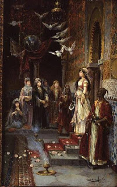

Sanhedrin 21 - Laws of the King
" He shall not multiply wives ..." - only up to eighteen - "... so that his heart is not turned away ." Rabbi Yehudah says, "He may multiply wives beyond eighteen, provided that they do not turn his heart away from God." Rabbi Shimon says, "Even if one can turn his heart away, he may not marry her."
The king may, however, have concubines. Tamar was David's daughter from a beautiful concubine captured in war. Amnon violated her and "... hated her with a very great hatred ..." Why? Because she entangled her pubic hair around his member and cut it . But Jewish women were renowned for not having pubic hair!? - Tamar was different.
" The king may not multiply horses ..." - only enough for his chariots. " And silver and gold he shall not accumulate overmuch " - only enough to pay his soldier's wages.
He writes a personal Torah scroll for himself and carries it with him at all times.
Art: Juan Gimenez y Martin - The Harem